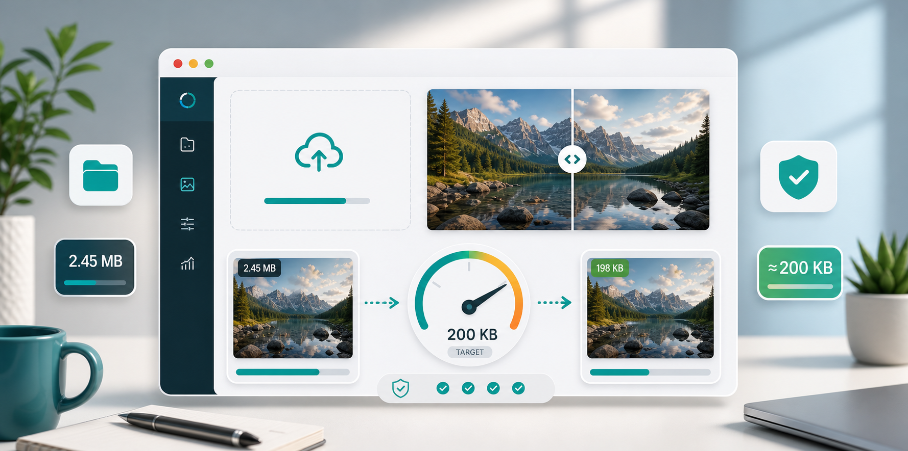

200KB images
Compress image to 200KB for uploads and websites.

A 200KB limit is common because it is small enough for quick uploads but large enough to keep a useful image. You may see it on job portals, school systems, profile uploads, website media guidelines, and some document forms. Compared with 50KB, 200KB gives you more room to preserve clarity.
Start with the destination. A website article image, a profile photo, and a scanned document do not need the same treatment. For a photo, JPG is usually the easiest format. For a screenshot or certificate, readability matters more than aggressive savings. For a website, WebP may be a better option if your platform supports it.
Resize first. For many web images, 1200 to 1600 pixels wide can look clean while staying near 200KB. For profile photos, you can often go smaller. If the file is a document scan, crop away empty background before reducing size. Removing unnecessary border areas can save file weight while keeping the text larger.
Then compress. For JPG, try quality around 70 to 78 percent. If the result is still above 200KB, reduce width slightly before lowering quality too much. If the image contains small text, avoid extreme compression. Text can become fuzzy even when the overall image looks acceptable.
For website owners, 200KB is a useful target for many article images and product previews, but it is not a universal rule. A large hero image may need more room, while thumbnails should be much smaller. Check how the image appears in the actual layout. If it displays at 600 pixels wide, there is no reason to upload a huge file.
You can use the CompressPixel tool to resize and compress in one step. If you are dealing with stricter limits, read compress image to 50KB or compress image under 100KB. For public pages, also read image compression for SEO.
A practical 200KB workflow starts with one test image. Export it at 1600 pixels wide and 75 percent quality. If it lands under 200KB and looks good, use similar settings for the rest of that image group. If it is still too large, try 1400 pixels or 70 percent quality. If it looks too soft, raise quality and reduce dimensions instead.
For photos with lots of detail, such as trees, fabric, crowds, or food, 200KB can be harder to reach than it sounds. Busy detail needs more data to look clean. Simple portraits, product photos on plain backgrounds, and cropped profile images are easier. This is why two images with the same dimensions can produce very different file sizes.
For forms, keep the destination rules in mind. Some upload systems care only about file size. Others also check pixel dimensions, format, or filename. If the form rejects a file that is under 200KB, check whether it expects JPG, whether the dimensions are too large, or whether the filename contains unusual characters.
If you are preparing many files, group them by type before compressing. Photos, screenshots, signatures, and document scans behave differently. A batch of similar profile photos can share one setting. A mixed folder should be handled more carefully so text-heavy images are not damaged by photo-style compression.
The right 200KB image should be accepted by the upload form, open quickly, and still show the important detail. Keep the original image safe and export a separate upload-ready version.
Sources and further reading
- web.dev image performance explains how smaller resources can improve loading.
- Google Search Console Core Web Vitals report helps site owners monitor real-world speed signals.